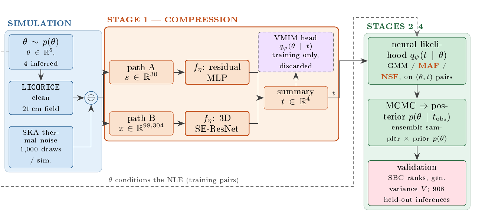

Method
The two data paths enter only at the first stage. Stages two to four are identical for every arm: same split, same estimator families, same sampler settings, same 908 validation simulations. Any difference in the final posteriors is attributable to compression alone.

Neural compression with VMIM
The compressor fη maps an observation to t. The quantity worth preserving is the mutual information I(t; θ), which can never exceed I(x; θ) and equals it only when t is sufficient. It cannot be evaluated directly, but an auxiliary density qφ(θ | t) gives the Barber–Agakov lower bound, and maximising it reduces to a negative log-likelihood:
The head is a two-component Gaussian mixture with full Cholesky covariance. The MSE baseline trains the same networks to predict the conditional mean; it is VMIM with the variational family frozen to a fixed-width Gaussian, so it carries no information about posterior shape.
Neural likelihood estimation
A conditional density qψ(t | θ) is fitted by maximum likelihood on roughly 9.8 million (simulation, noise) rows, split by simulation ID to avoid leakage. The Gaussian mixture of Semelin et al. (2025) is the baseline, with a softplus floor added on the Cholesky diagonal. Masked autoregressive flows and neural spline flows are added as more expressive alternatives; the spline flow uses 8 rational-quadratic bins on [−5, 5] over standardised t and becomes the default.
Posterior sampling
The surrogate likelihood and a uniform prior on the sampled, censored support are combined and explored with an affine-invariant ensemble sampler: 160 walkers, 250 burn-in steps and 3,000 steps. Each likelihood call is one batched network pass, so an inference takes seconds.
Validation
Every arm runs full inference on 908 held-out simulations. Calibration is read first, from simulation-based calibration rank histograms in 30 bins, summarised as a floor-relative ratio where 1 means as flat as Poisson noise allows and 1 ± 0.26 is consistent with perfect calibration. Precision is read second, as the median generalised variance det(Σ)1/2 and robust marginal half-widths.
Compressor architectures
Path A: residual MLP
Three hidden layers of width 128 with LayerNorm and LeakyReLU, exporting t ∈ R8. The natural choice of four dimensions gave visibly worse posteriors. A short MSE warm-up was needed before switching to VMIM.
Path B: 3D SE-ResNet
The three redshifts enter as three channels of one 3D image. A 33 stem is followed by four residual blocks with squeeze-and-excitation gating and channels 32 → 32 → 64 → 128 → 256, about 4.1M parameters. Downsampling is deliberately late: the first two blocks stay at 323, because the rH/S signature lives in small-scale texture that early pooling averages away. The last three stages are each pooled to a per-channel mean and standard deviation, concatenated into 896 features, and mapped to t ∈ R4.
Keeping the weak parameter in play
A single joint log-likelihood rewards every halving of a well-constrained parameter’s width, so easy parameters are learned first and the weak one waits. Two changes restore balance.
- A width floor. Cholesky diagonals are clamped at σmin = 10−2, capping each parameter’s contribution at about 3.7 nats per sample, so saturated parameters stop attracting gradient.
- A faster head. The variational head uses a learning rate five times the compressor’s, so it re-converges on the moving latent and the gradients it passes back remain trustworthy.
A dequantisation option adds uniform noise of half-width 0.1 to the rH/S training target, turning grid atoms into bands. It applies only to the stage-1 head; exported summaries and stage-2 targets stay un-jittered.
A training-time recovery probe
Every five epochs the compressor is frozen, and a random forest per parameter predicts θj from t on held-out simulations. The out-of-sample R2 approximates the share of prior variance the summary removes, parameter by parameter, and drives checkpointing and early stopping.